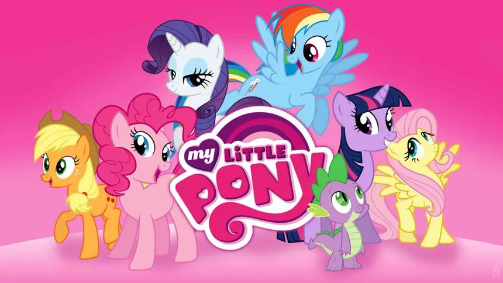
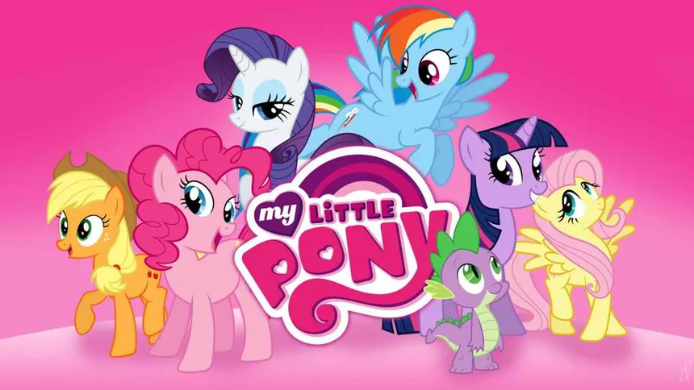

Introduction
This Webpage is all about animation. It will be explaining how animation is created, it's history and different types of animation.
What is Animation? 🎬
Animation is a filmmaking technique whereby still images are manipulated to create moving images. In traditional animation, images are drawn or painted by hand on transparent celluloid sheets to be photographed and exhibited on film. Animation has been recognized as an artistic medium, specifically within the entertainment industry. Many animations are either traditional animations or computer animations. Computer animations can be animated in 3D or 2D while using different techniques. Stop motion animation, in particular claymation, is also prominent alongside these other forms. Animation is contrasted with live action, although the two do not exist in isolation. Many filmmakers have produced films that are a hybrid of the two. As CGI increasingly approximates photographic imagery, filmmakers can relatively easily composite 3D animated visual effects (VFX) into their film, rather than using practical effects.


 

How 3D Movie Animations Are Made
Movie animations can be animated in numerous ways such as 2D, 3D, hand-drawn or Stop motion by different techniques. Animators animate 3D animations by making a 3D model on softwares like Blender, Maya, 3ds Max, or Cinema 4D then undergoing a process called rigging. Next, keyframe animation This is where the animator sets key positions or poses for the character or objectss at specific points in time. The computer then interpolates the frames in between to create smooth motion. The final step is to render the animation. This process involves generating the final images or frames of the animation based on the keyframes, the lighting, textures and camera angles are then set up and that becomes the final product.
Different Types of Animations
| Type of Animation | Description | Examples |
|---|---|---|
| 2D Animation | The art of creating movement in a two-dimensional space by sequencing illustrated images over time. Rooted in traditional hand-drawn techniques and now largely produced through digital tools. Used in TV shows, video games and web animations. | Spongebob Squarepants, Naruto, Rick and Morty, Tom and Jerry |
| 3D Animation | 3D animations made with computer softwares such as Blender, Maya and 3Ds Max. This type of animation allows for more realistic movements and perspectives. Used in video games, interactive websites and TV shows. | Google Earth, Elemental, Polar Express, Avatar |
| Stop Motion Animation | Animation that is captured one frame at a time, with physical objects then is put together and played very fast. | Wallace and Gromit, Coraline, The Nightmare Before Christmas |
| Traditional Animation | Animation that is hand-drawn or painted frame by frame. This type of animation is seen in classic cartoons and films. | Classic Looney Tunes, 1937 Snow White and the Seven Dwarfs, The Lion King (1994) |